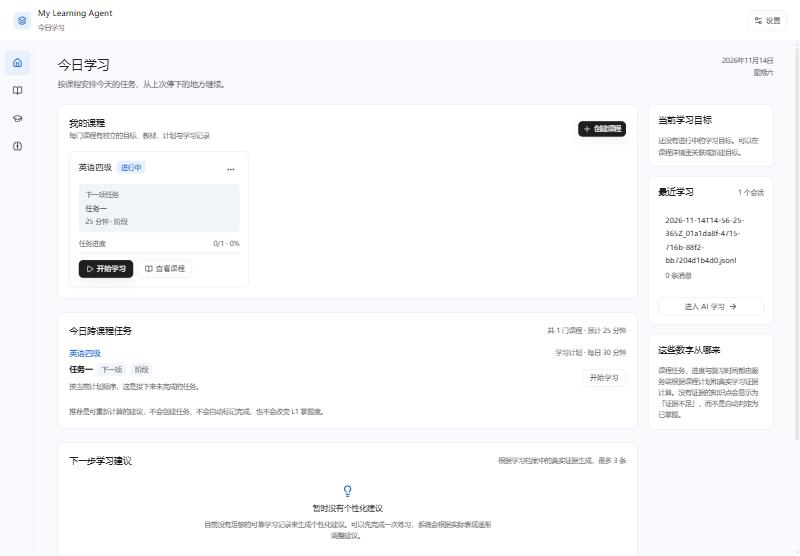

三套高保真方案，同一份演示数据、同一套业务接口。差异不在配色，而在信息架构： 是把注意力收束到一件事，还是围绕课程展开，还是把一天摊成一张可读的数据面板。
当前页面由四张同权重卡片纵向堆叠，右侧再放一条 224px 信息栏。每块都成立， 但合在一起时，用户要先读完四块才知道「现在该做什么」。

每套原型都是完整的 1440px 页面，右上角可切换浅色 / 深色，浏览器缩到 390px 可看移动端降级。 预览窗只显示首屏，点「打开完整原型」查看可滚动页面。
Cherry Studio 式的克制留白：文字侧栏、单一焦点卡、编辑式排版的日程列表。强调「打开就能开始」。
LearnHouse 式的课程驱动：主课横幅、带封面的任务卡、课程目录与目标并列。强调「我在学什么」。
Tremor 式的数据面板：四个指标、任务队列、知识状态与时间分配。强调「今天进展如何」。
同一份数据、同一套接口。下面按实际实现会碰到的决策点比较，而不是按主观喜好。
| 维度 | A · 静室 | B · 课表 | C · 仪表 |
|---|---|---|---|
| 首屏焦点 | 一个下一步 + 今日安排 | 今日主课横幅 + 任务卡 | 四个指标 + 任务队列 |
| 信息密度 | 低–中 | 中 | 高 |
| 导航 | 236px 文字侧栏 可降级为现有 64px 图标栏 | 248px 课程侧栏 | 现有 64px 图标栏，不改壳层 |
| 课程呈现 | 侧栏课程列表 + 单课进度环 | 封面卡片 + 课程目录 + 阶段 | 课程进度条组 |
| 数据呈现 | 4 个统计数字 | 进度条 + 百分比 + 阶段 | 指标、堆叠条、图例、时间分配 |
| 最适合的时刻 | 每天打开，快速开始 | 多课程并行，先选课再学 | 复盘进展，理解「学到哪了」 |
| 与现有规范 | 高导航需改 | 中导航需改 | 最高零导航改动 |
| 移动端 | 最自然，单列阅读 | 良好，卡片天然堆叠 | 需把队列降级为卡片 |
| 改造量 | 小 | 中 | 中 |
| 主要风险 | 导航规范变更 | 首屏变高、封面调性 | 信息过载、统计口径 |
三套方案都不新增依赖、不改 API、不动 stores 与路由。区别在于页面重组程度，以及是否需要改导航壳层。 行数为按组件拆分后的估算，用于比较量级，不是精确承诺。
| 方案 | 触达文件 | 新增展示组件 | 样式 / i18n | 风险与前置确认 |
|---|---|---|---|---|
| A · 静室 | TodayPage.tsx 637 → 约 500 CourseCard.tsx 停用 AppShell.tsx + shell.css（侧栏，可选） |
TodayFocusCard TodayTaskRow |
约 200 行 CSS +4 个文案键 |
低。内容区可先落地，侧栏展开作为第二阶段；需同步 ui-guidelines 的「仅图标栏」规则。 |
| B · 课表 | TodayPage.tsx 重写约 560 CourseCard.tsx 164 → 约 220 AppShell.tsx + shell.css |
CourseCover（CSS/SVG） TaskCard CourseRow |
约 300 行 CSS +8 个文案键 |
中。首屏高度增加约 250px；封面是新增视觉资产，但不新增图片字段或接口。 |
| C · 仪表 | TodayPage.tsx 重构约 600 CourseCard.tsx 停用 AppShell.tsx 不改 |
KpiCard QueueRow StackedBar |
约 240 行 CSS +5 个文案键 |
中。移动端表格降级；掌握度分布需注明来自 knowledge_states / daily.knowledge，不做无数据支撑的周趋势。 |
Button / Card / Badge / EmptyState / Tooltip；
保留「开始学习 = 先 POST /learning/start，成功后才跳转」的状态机；保留归档课程、暂停课程、空态与错误态；
浅色 / 深色两套 token 同步验证。课程归档 / 删除仍走课程详情页的现有入口；卡片上的「更多」菜单可以移除，但动作与二次确认流程不变。
Button · primary / secondary / ghostCard · default / selectableBadge · accent / warning / neutralEmptyState · compactIconButton + DropdownMenucoursesStore.startLearning.mla-nav-button + TooltiplearnerStore · coursesStore · sessionsStore「今日学习」的核心任务不是展示全部数据，而是让人在两秒内决定现在做什么。 A 用一张焦点卡解决这个问题，改动也最小；B 的课程叙事更适合课程入口与课程详情； C 的指标与图表更适合放进现有的「我的学习档案」页，而不是挤进每日入口。
docs/ui-redesign/phase1/ 下的四个 HTML 原型与这份评审页；
未修改 apps/ 下任何源码，未提交 commit。
第一步只改内容区：焦点卡 + 日程列表 + 复习，保留现有 64px 图标栏，风险最低。
第二步再评估侧栏是否展开，以及是否把 B 的课程封面语言用于「我的课程」。
品牌与课程识别 → B
数据复盘与学习档案 → C
最快上线、最少规范冲突 → A 第一步